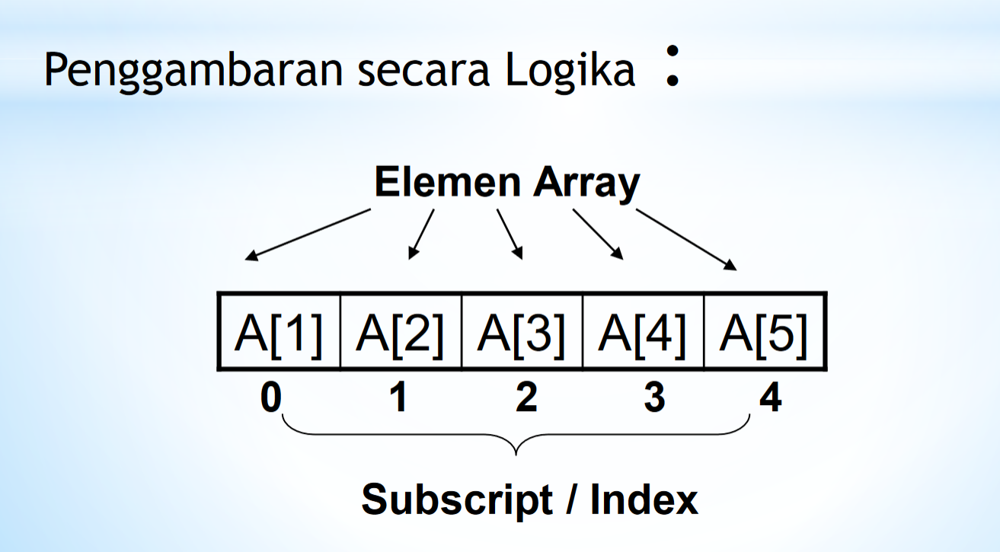
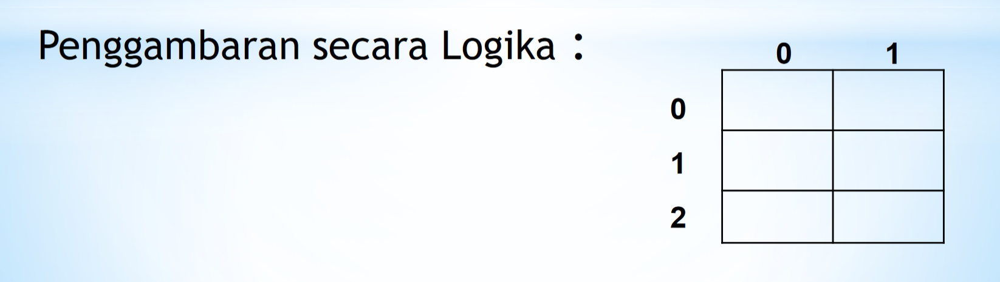
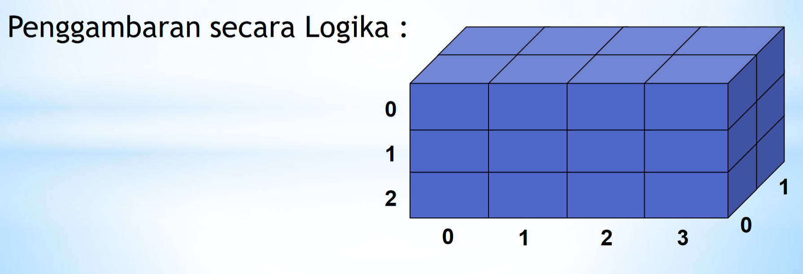

Array / Larik merupakan Struktur Data Sederhana yang dapat didefinisikan sebagai pemesanan alokasi memory sementara pada komputer.Sebuah Array dapat mempunyai elemen yang seluruhnya berupa integer atau character atau String bahkan dapat pula terjadi suatu Array mempunyai elemen berupa Array. Array dapat didefinisikan sebagai suatu himpunan hingga elemen yang terurut dan homogen.
Setiap elemen dalam array dapat diakses menggunakan indeks atau kunci yang unik. Array dapat digunakan untuk menyimpan data numerik, karakter, objek, atau bahkan array lainnya. Array memungkinkan kita untuk mengorganisir dan mengelola data dengan lebih efisien.
Terurut : Dapat diartikan bahwa elemen tersebut dapat diidentifikasi sebagai elemen pertama, elemen kedua dan seterusnya sampai elemen ke-n.
Homogen : Adalah bahwa setiap elemen dari sebuah Array tertentu haruslah mempunyai type data yang sama.
Kelebihan : Akses langsung ke elemen dengan indeks, menyederhanakan manipulasi data terstruktur.
Kekurangan : Terbatas oleh ukuran yang tetap, dan operasi penyisipan/penghapusan elemen di tengah array dapat mahal.
Dapat disebut juga dengan istilah vektor yang menggambarkan data dalam suatu urutan Deklarasi : Type_Data Nama_Variabel [index] Misalnya : int A[5];
Deklarasi : Type_Data Nama_Variabel [Index1] [index2];
Digunakan untuk mengelola data dalam bentuk 3 dimensi atau tiga sisi.
Deklarasi
Type_Data Nama_Variabel [index1] [index2] [index3]; Misal : int A [3][4][2];
